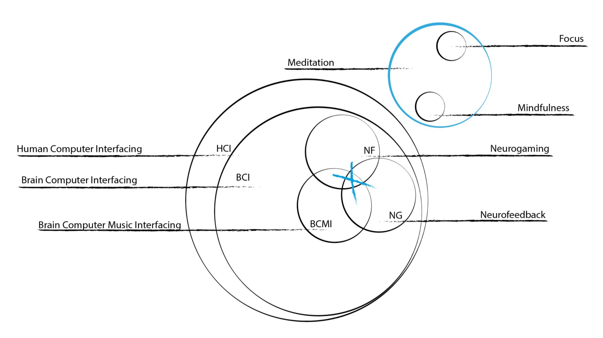
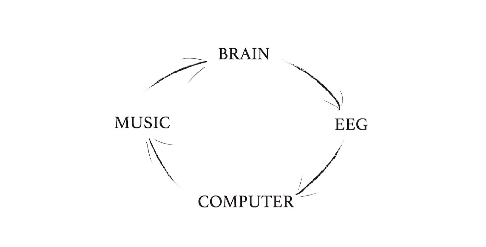
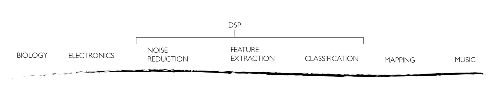
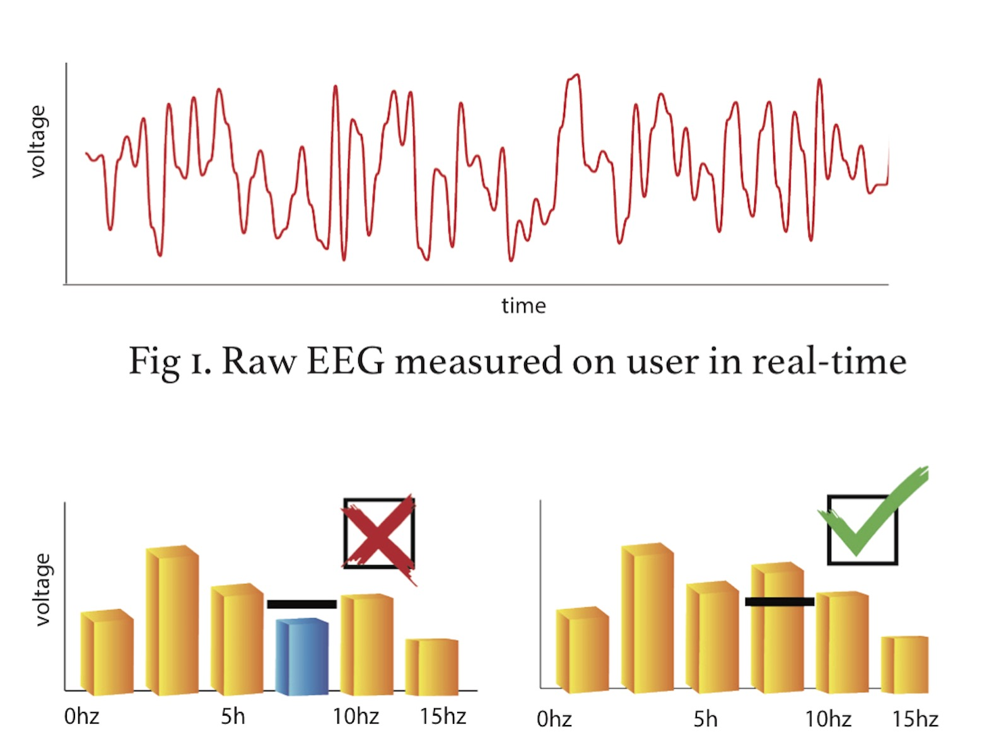
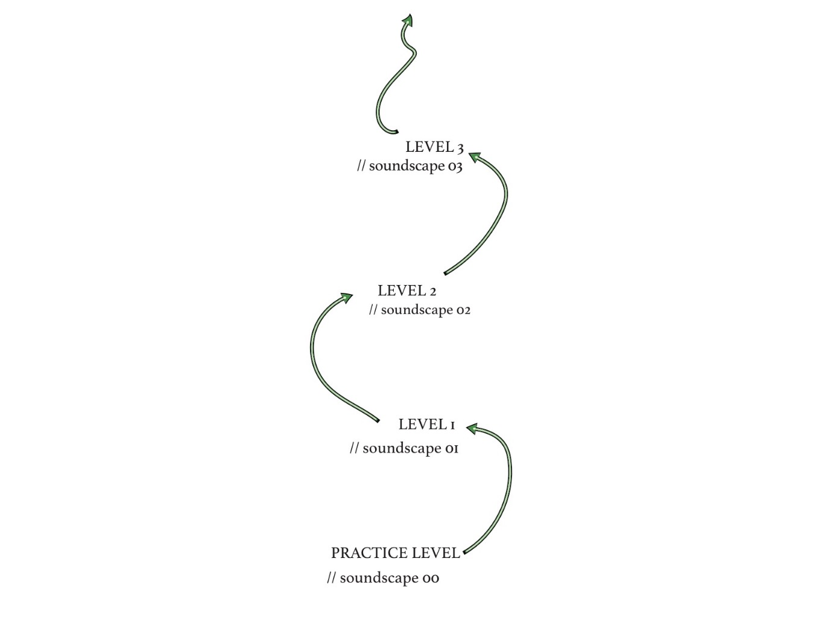
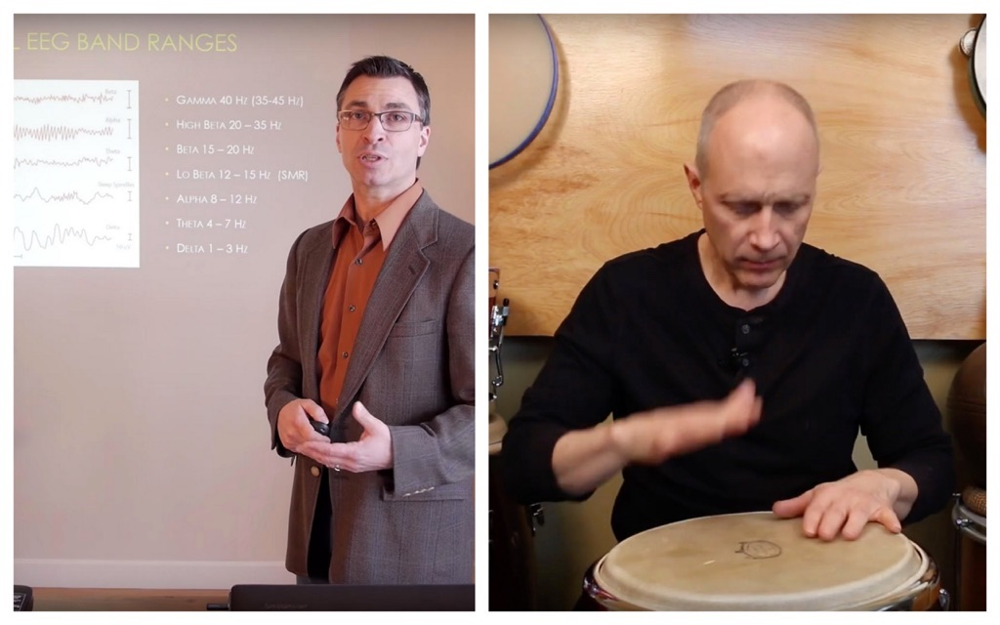
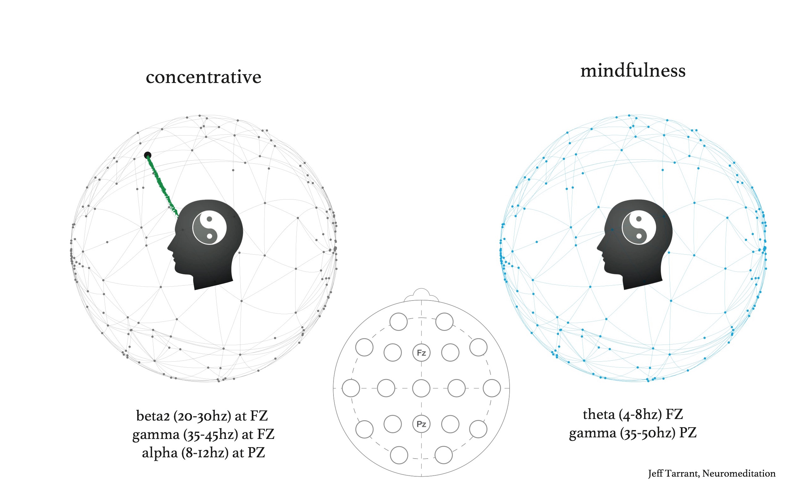
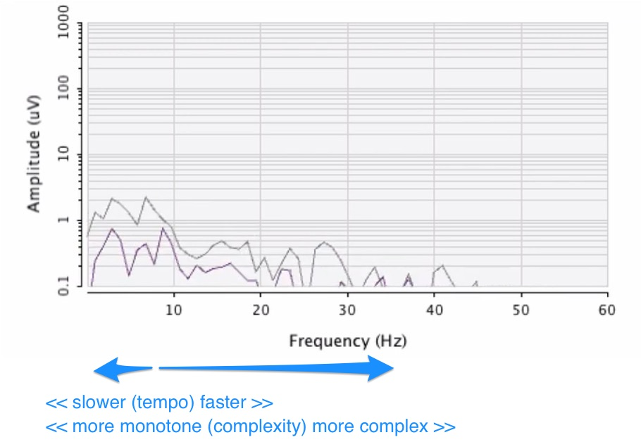

30 minute long
@ 2019 AES (Audio Engineering Society) International Conference on Immersive and Interactive Audio, York, UK (programme)
My interdisciplinary, practice research develops a Brain-Computer Music Interface (BCMI) which reinforces brainwave patterns linked to meditative states of mind by giving auditory feedback. The software employs the therapeutic benefits of neurofeedback, gaming, music and meditation in order to be effective in helping users understand consciousness. The software’s effectiveness is investigated in training programmes and demonstrated in presentations and concerts with consumer-graded electroencephalography.
today:

// reinforces brainwave patterns … by giving auditory feedback (neuro feedback)




// this will change: user can choose between soundscapes, each soundscape explores a specific type of meditation with a selected musical functions;

Meditation is a systematic mental training designed to challenge habits of attending, thinking, feeling, and perceiving. ~Jeff Tarrant

